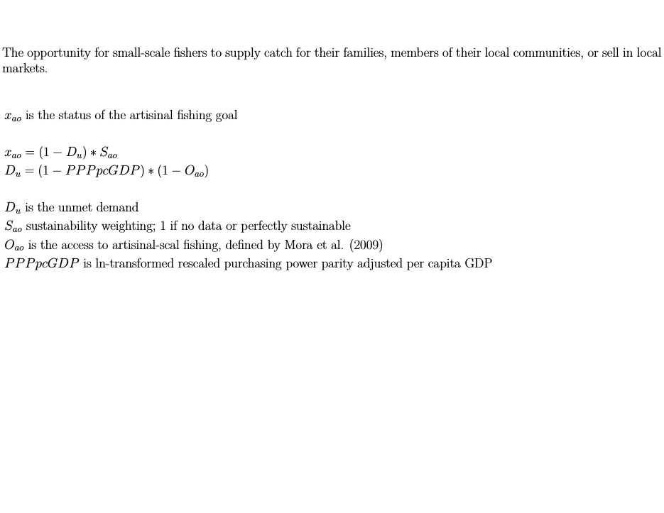

How to Calculate a Goal Score
Each of the ten goals have their own unique methodology. Methodologies are built around the types of available data, appropriate for the analysis – consistently quantified across the spatial scale of the assessment and quality-controlled – and based on the best scientific understanding of the subject per expert input and peer review. Each goal score calculation takes a few different data layers that inform present status and likely near-term future status, which is calculated from trend, pressure, and resilience information. For
